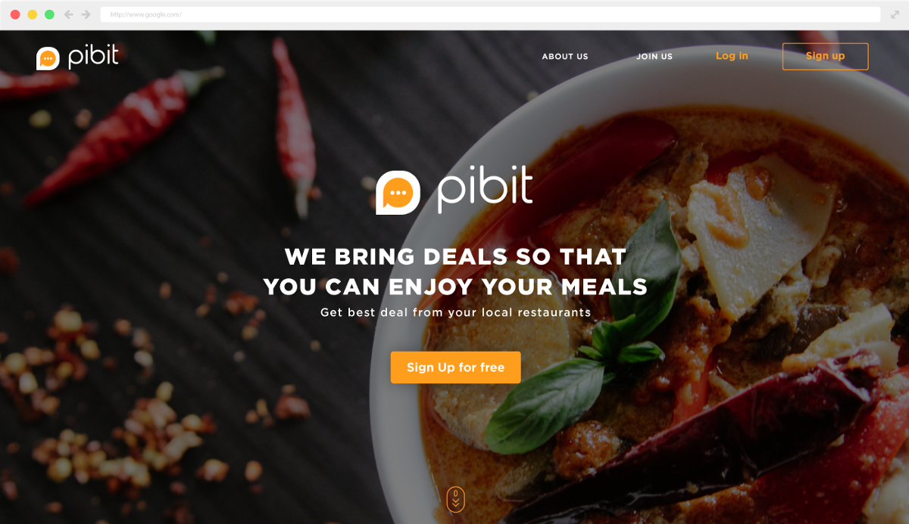
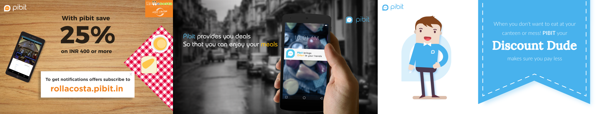
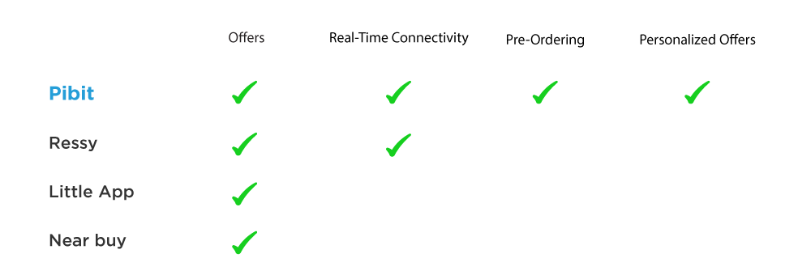
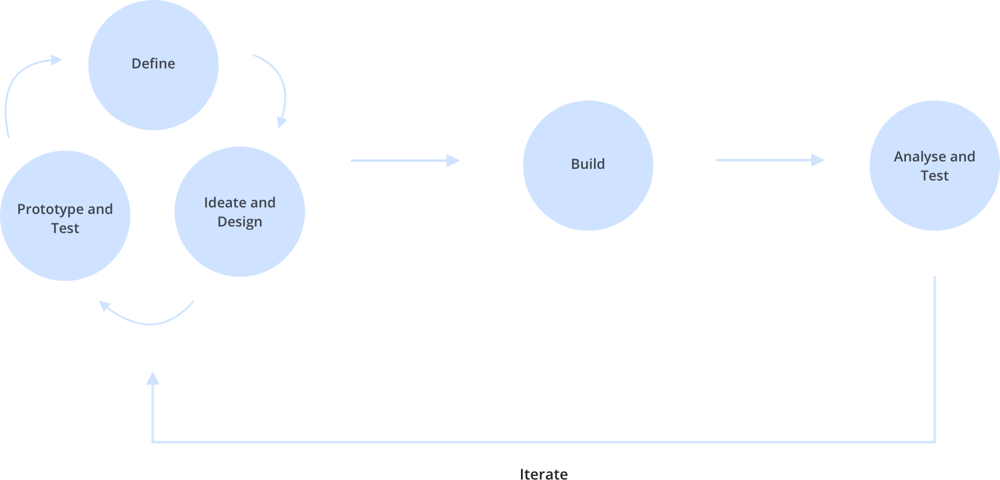
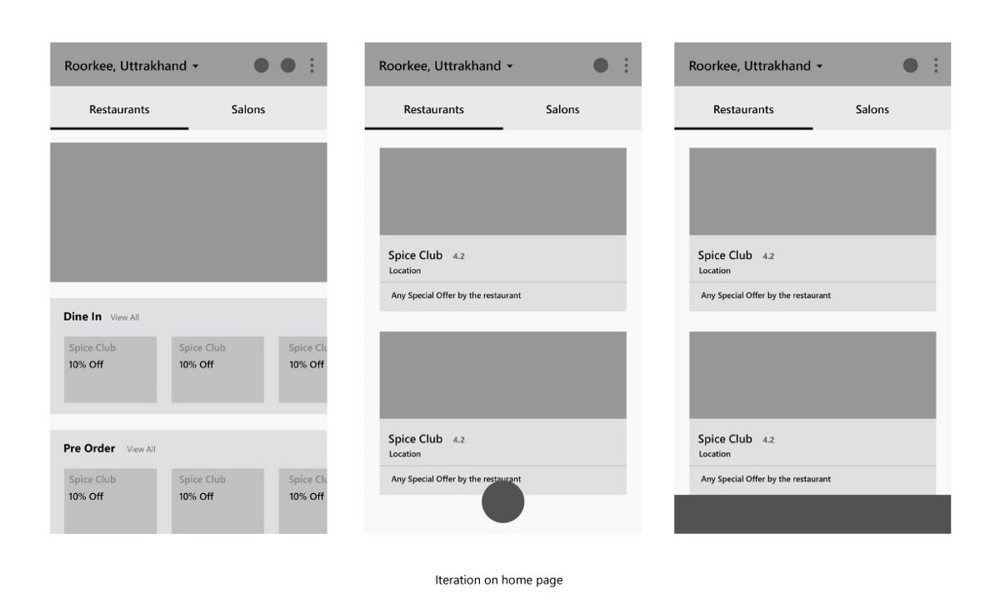
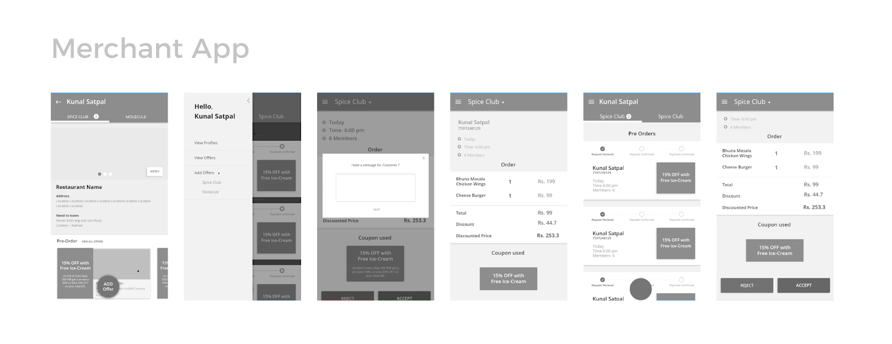
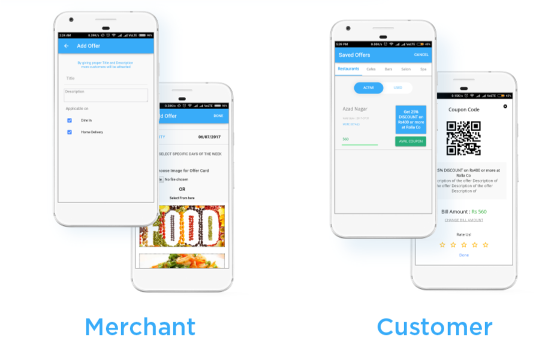
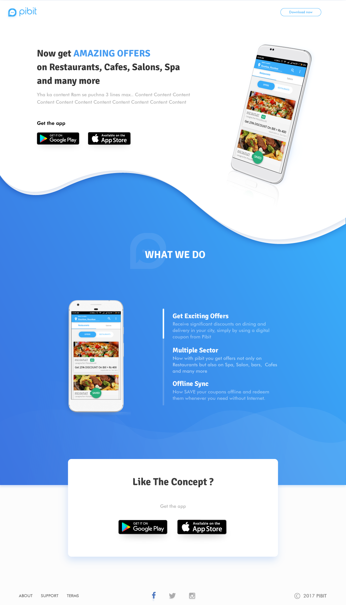

It all started with a call from my senior who was working on a product idea. There was no way I could have said no to this opportunity of working with a startup at its nascent days. Also this being at a very early stage of my career, This would be a great learning experience for me.
Pibit has created an online platform for the offline local merchants where they could connect to potential customers in the real time. Thus, solving the problem of low sales during off-peak hours by luring customers through real-time offers and also keeping a track of their customers to provide them some personalized offers.
I joined pibit a few months after the launch of their website. Being the only designer there, I got the experience of working on various fields involved in the process of building and shaping a product (like designing marketing strategies and posters, designing B-Plan to raise funding, etc).

some of the posters I designed
I joined pibit a few months after the launch of the website, and we started with a small survey and user interviews for both customers and merchants to know their response and know their experience with the website.
The survey and research went really well and we gained some good insights regarding our product. Students in IIT really liked our product and the merchants were also able to increase their sales with the help of pibit but there were a few pain points which were affecting the user experience.
After several discussions on how can we solve all of these problems, we decided our next big step would be to build an android application. Why Android Application?
There were many apps on the market already providing offers but there was none providing real-time connectivity and pre-ordering.

At a nascent stage, we at pibit believed that collaborative work with the agile mindset can differentiate a great final product from a good product. Agile mindset is not limited to a fast, flexible, and iterative process, it means much more than this. Agile mindset promotes collaborative work with discussions, testing, and iterations at every step of the process.

During my stay at Pibit, I worked on both the ends of the android application and the website.
Following the agile mindset, features were all discussed in regularly scheduled meetings with all the members of the team, several market constraints were also to be kept in mind while working on features and based on that features to be included in the MVP were decided. After deciding the features, We worked on flow and wireframes design started.

We used usability testing method for improving or optimizing our product. It helped in verifying the assumption, gain new insights and when done on focus groups it was based on gathering design suggestions.
Users were asked to perform certain tasks and were observed closely to identify if they were facing some problems or any confusion. Results from these testings were used to make the iteration.

After multiple iterations and product discussion we finalized the wireframes and moved on to the visuals. Earlier Pibit had orange branding and logo but after expanding our domain to multiple sectors including spas, salons etc, we decided to rethink on our branding and colors.
We moved back to our original blue color and to facilitate multiple sectors as well as to gain users trust with a new brand.

Earlier Pibit used the only website for subscribing restaurants, get notifications, avail offers. So the earlier website completely focussed on making the subscription flow delightful and providing all the features on the web.
After shifting all the features to the Android application, the web became the main platform for promotion for our current users. The whole shift from web to the Android application can lead to several user dropouts, the landing page should be designed to make sure that the user retention is maximum.

My journey at pibit was full of learning and excitement. Working as a core team member of pibit, I learned not only about design but also how to collaborate in a team and work with the vision same as that of your product. It was a great learning experience for me to work with a startup at its early stage and know about the problems faced during the process of making a good product. Not only Product and UI/UX design, I learned a lot about graphic, market strategies and different aspects of design.